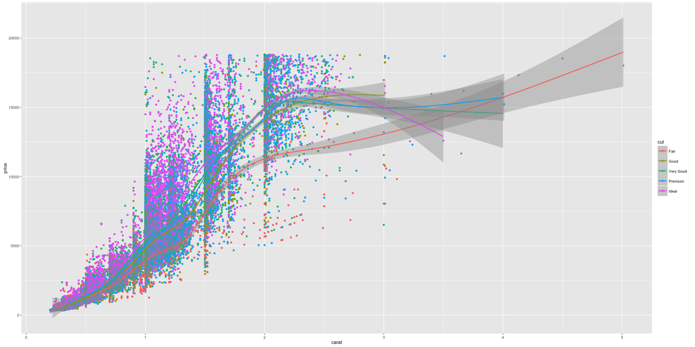
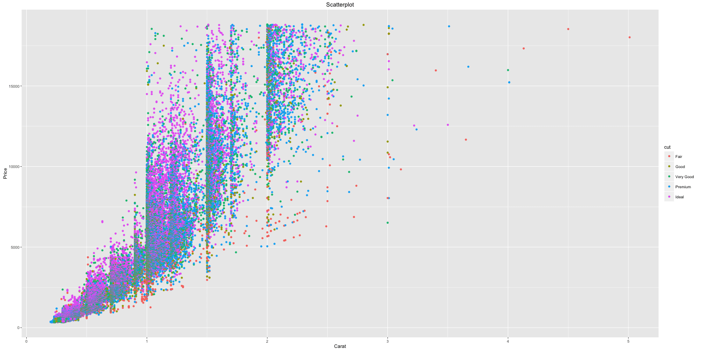
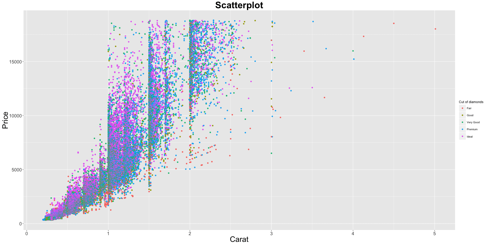

How to make any plot in ggplot2?
ggplot2 is the most elegant and aesthetically pleasing graphics framework available in R.
The distinctive feature of the ggplot2 framework is the way you make plots through adding ‘layers’. The process of making any ggplot is as follows.
1. The Setup
First, you need to tell ggplot what dataset to use using the ggplot() function. Optionally you can add whatever information is known at the time of setup - such as X and Y axes, color, size, shape and stroke. If you intend to add more layers later one, may be a bar chart on top of a line graph, you can specify the respective aesthetics when you add those layers.
Below, I show few examples of how to setup ggplot using in the diamonds dataset that comes with ggplot2 itself.
Examples:
library(ggplot2)
ggplot(diamonds) # if only the dataset is known.
ggplot(diamonds, aes(x=carat)) # if only X-axis is known. The Y-axis can be specified in respective geoms.
ggplot(diamonds, aes(x=carat, y=price)) # if both X and Y axes are known.
ggplot(diamonds, aes(x=carat, color=cut)) # Each category of the 'cut' variable will now have a distinct color, once a geom is added.The aes argument stands for aesthetics. ggplot2 considers the X and Y axis of the plot to be aesthetics as well, along with color, size, shape, fill etc.
2. The Layers
The layers in ggplot2 are also called ‘geoms’. Once the base setup is done, you can append the geoms one on top of the another. The documentation provides a compehensive list of all available geoms.
library(ggplot2)
ggplot(diamonds, aes(x=carat, y=price, color=cut)) + geom_point() + geom_smooth() # Adding scatterplot geom (layer1) and smoothing geom (layer2).
We have added two layers (geoms) to this plot - the geom_point() and geom_smooth().
Notice the X and Y axis and how the color of the points vary based on the value of cut variable. The legend is automatically added, though the legend title needs a fix. Fixing the legend title falls under the jurisdiction of themes. Here is a quick challenge for you. Can you make the shape of the points vary with color feature?
Though setting up took us quite a bit of code, adding further complexity such as the layers, distinct color for each cut etc was easy. Imagine how much code you would have had to write if you were to make this in base graphics? Thanks to ggplot2!
# Answer to the challenge.
ggplot(diamonds, aes(x=carat, y=price, color=cut, shape=color)) + geom_point()3. The Labels
Now that you have drawn the main parts of the graph. You might want to add the plot’s main title and perhaps change the X and Y axis titles. This can be accomplished using the labs layer, meant for specifying the labels. However, manipulating the size, color of the labels is the job of the ‘Theme’.
library(ggplot2)
gg <- ggplot(diamonds, aes(x=carat, y=price, color=cut)) + geom_point() + labs(title="Scatterplot", x="Carat", y="Price") # add axis lables and plot title.
print(gg)
The plot’s main title is added and the X and Y axis labels capitalized.
Note: If you are showing a ggplot inside a function, you need to explicitly save it and then print using the print(gg), like we just did above.
4. The Theme
Almost everything is set, except that we want to increase the size of the labels and change the legend title. Adjusting the size of labels can be done using the theme() function by setting the plot.title, axis.text.x and axis.text.y. They need to be specified inside the element_text(). If you want to remove any of them, set it to element_blank() and it will vanish entirely.
Adjusting the legend title is a bit tricky. If your legend is that of a color attribute and it varies based in a factor, you need to set the name using scale_color_discrete(), where the color part belongs to the color attribute and the discrete because the legend is based on a factor variable.
library(ggplot2)
gg1 <- gg + theme(plot.title=element_text(size=30, face="bold"),
axis.text.x=element_text(angle=45, size=15),
axis.text.y=element_text(size=15),
axis.title.x=element_text(size=25),
axis.title.y=element_text(size=25)) +
scale_color_discrete(name="Cut of diamonds") # add title and axis text, change legend title.
print(gg1) # print the plot
If the legend shows a shape attribute based on a factor variable, you need to change it using scale_shape_discrete(). Had it been a continuous variable, use scale_shape_continuous() instead.
So now, Can you guess the function to use if your legend is based on a fill attribute on a continuous variable?
The answer is scale_fill_continuous().
5. The Facets
6. Commonly Used Features
6.1 Make a time series plot (using autoplot and ggfortify)
6.2 Make multiple timeseries on same plot
6.3 Change themes
6.4 Legend inside the plot
6.5 Grid lines
6.6 Grid lines over the plot items
6.7 Annotation
6.8 Saving ggplot
7. The Cheatsheet (Separate Post)
All items from http://zevross.com/blog/2014/08/04/beautiful-plotting-in-r-a-ggplot2-cheatsheet-3/
All items from http://www.computerworld.com/article/2935394/business-intelligence/my-ggplot2-cheat-sheet-search-by-task.html